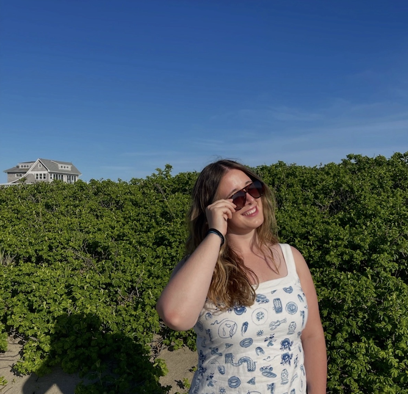

I am a Drexel University Student studying User Experience and Interactive Design at the College of Westphal. I love combining user research with design development problems.
I grew up in Havertown Pennsylvania, and went to Merion Mercy Academy for Highschool. Throughout my 4 years I was a varsity athlete on Merion Mercy's Crew Team.
During my time as Freshman Student Athlete I was an Undeclared Major. While exploring career paths I sparked an interest for User Experience design and realized URI did not have a design program. After completing a full year at URI I decided the best option for me was to transfer to Drexel University for UX Design.